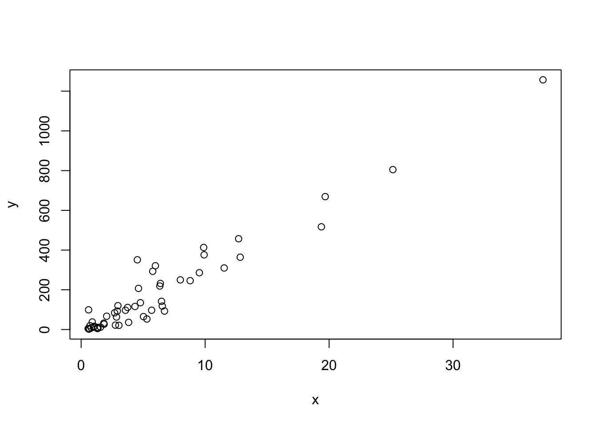
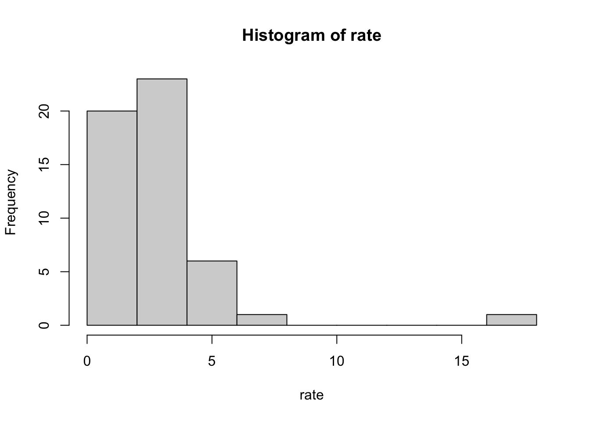
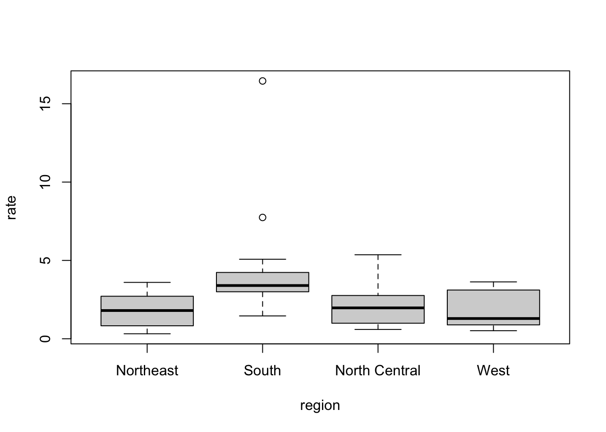

4 Section 3 Overview
Section 3 introduces to the R commands and techniques that help you wrangle, analyze, and visualize data.
In Section 3.1, you will:
- Subset a vector based on properties of another vector.
- Use multiple logical operators to index vectors.
- Extract the indices of vector elements satisfying one or more logical conditions.
- Extract the indices of vector elements matching with another vector.
- Determine which elements in one vector are present in another vector.
In Section 3.2, you will:
- Wrangle data tables using the functions in ‘dplyr’ package.
- Modify a data table by adding or changing columns.
- Subset rows in a data table.
- Subset columns in a data table.
- Perform a series of operations using the pipe operator.
- Create data frames.
In Section 3.3, you will:
- Plot data in scatter plots, box plots and histograms.
4.1 Indexing
The textbook for this section is available here.
Key Points
- We can use logicals to index vectors.
- Using the function >sum()on a logical vector returns the number of entries that are true.
- The logical operator “&” makes two logicals true only when they are both true.
Code
# defining murder rate as before
murder_rate <- murders$total / murders$population * 100000
# creating a logical vector that specifies if the murder rate in that state is less than or equal to 0.71
index <- murder_rate <= 0.71
# determining which states have murder rates less than or equal to 0.71
murders$state[index]## [1] "Hawaii" "Iowa" "New Hampshire" "North Dakota" "Vermont"# calculating how many states have a murder rate less than or equal to 0.71
sum(index)## [1] 5# creating the two logical vectors representing our conditions
west <- murders$region == "West"
safe <- murder_rate <= 1
# defining an index and identifying states with both conditions true
index <- safe & west
murders$state[index]## [1] "Hawaii" "Idaho" "Oregon" "Utah" "Wyoming"4.2 Indexing - Indexing Functions
The textbook for this section is available here.
Key Points
- The function which() gives us the entries of a logical vector that are true.
- The function match() looks for entries in a vector and returns the index needed to access them.
- We use the function %in% if we want to know whether or not each element of a first vector is in a second vector.
Code
# to determine the murder rate in Massachusetts we may do the following
ind <- which(murders$state == "Massachusetts")
murder_rate[ind]## [1] 1.8# to obtain the indices and subsequent murder rates of New York, Florida, Texas, we do:
ind <- match(c("New York", "Florida", "Texas"), murders$state)
ind## [1] 33 10 44murder_rate[ind]## [1] 2.67 3.40 3.20# to see if Boston, Dakota, and Washington are states
c("Boston", "Dakota", "Washington") %in% murders$state## [1] FALSE FALSE TRUE4.3 Assessment - Indexing
- Here we will be using logical operators to create a logical vector. Compute the per 100,000 murder rate for each state and store it in an object called
murder_rate. Then use logical operators to create a logical vector namedlowthat tells us which entries ofmurder_rateare lower than 1.
# Store the murder rate per 100,000 for each state, in `murder_rate`
murder_rate <- murders$total / murders$population * 100000
# Store the `murder_rate < 1` in `low`
low <- murder_rate < 1- The function `
which()helps us know directly, which values are low or high, etc. Let’s use it in this question.
# Store the murder rate per 100,000 for each state, in murder_rate
murder_rate <- murders$total/murders$population*100000
# Store the murder_rate < 1 in low
low <- murder_rate < 1
# Get the indices of entries that are below 1
ind <- which(low)
ind## [1] 12 13 16 20 24 30 35 38 42 45 46 51- Note that if we want to know which entries of a vector are lower than a particular value we can use code like this.
small <- murders$population < 1000000
murders$state[small]The code above shows us the states with populations smaller than one million.
# Store the murder rate per 100,000 for each state, in murder_rate
murder_rate <- murders$total/murders$population*100000
# Store the murder_rate < 1 in low
low <- murder_rate < 1
# Names of states with murder rates lower than 1
murders$state[low]## [1] "Hawaii" "Idaho" "Iowa" "Maine" "Minnesota" "New Hampshire" "North Dakota" "Oregon" "South Dakota" "Utah" "Vermont"
## [12] "Wyoming"- Now we will extend the code from the previous exercises to report the states in the Northeast with a murder rate lower than 1.
# Store the murder rate per 100,000 for each state, in `murder_rate`
murder_rate <- murders$total/murders$population*100000
# Store the `murder_rate < 1` in `low`
low <- murder_rate < 1
# Create a vector ind for states in the Northeast and with murder rates lower than 1.
northeast <- murders$region == "Northeast"
ind <- low & northeast
# Names of states in `ind`
murders$state[ind]## [1] "Maine" "New Hampshire" "Vermont"- In a previous exercise we computed the murder rate for each state and the average of these numbers. How many states are below the average?
# Store the murder rate per 100,000 for each state, in murder_rate
murder_rate <- murders$total/murders$population*100000
# Compute the average murder rate using `mean` and store it in object named `avg`
avg <- mean(murder_rate)
# How many states have murder rates below avg ? Check using sum
ind <- murder_rate < avg
sum(ind)## [1] 27- In this exercise we use the
matchfunction to identify the states with abbreviations AK, MI, and IA.
# Store the 3 abbreviations in a vector called `abbs` (remember that they are character vectors and need quotes)
abbs <- c("AK", "MI", "IA")
# Match the abbs to the murders$abb and store in ind
ind <- match(abbs, murders$abb)
# Print state names from ind
murders$state[ind]## [1] "Alaska" "Michigan" "Iowa"- If rather than an index we want a logical that tells us whether or not each element of a first vector is in a second, we can use the function
%in%.
For example:
x <- c(2, 3, 5)
y <- c(1, 2, 3, 4)
x%in%yGives us two TRUE followed by a FALSE because 2 and 3 are in y but 5 is not.
# Store the 5 abbreviations in `abbs`. (remember that they are character vectors)
abbs <- c("MA", "ME", "MI", "MO", "MU")
# Use the %in% command to check if the entries of abbs are abbreviations in the the murders data frame
abbs%in%murders$abb## [1] TRUE TRUE TRUE TRUE FALSE- In a previous exercise we computed the index
abbs%in%murders$abb. Based on that, and using thewhichfunction and the!operator, get the index of the entries ofabbsthat are not abbreviations.
# Store the 5 abbreviations in abbs. (remember that they are character vectors)
abbs <- c("MA", "ME", "MI", "MO", "MU")
# Use the `which` command and `!` operator to find out which index abbreviations are not actually part of the dataset and store in `ind`
ind <- which(!abbs%in%murders$abb)
# Names of abbreviations in `ind`
abbs[ind]## [1] "MU"4.4 Basic Data Wrangling
The textbook for this section is available here and here.
In the textbook, the dplyr package is introduced in the context of the tidyverse, a collection of R packages
Key Points
- To change a data table by adding a new column, or changing an existing one, we use the
mutatefunction. - To filter the data by subsetting rows, we use the function
filter. - To subset the data by selecting specific columns, we use the
selectfunction. - We can perform a series of operations by sending the results of one function to another function using what is called the pipe operator,
%>%.
Code
# installing and loading the dplyr package
if(!require(dplyr)) install.packages("dplyr")## Loading required package: dplyr##
## Attaching package: 'dplyr'## The following objects are masked from 'package:stats':
##
## filter, lag## The following objects are masked from 'package:base':
##
## intersect, setdiff, setequal, unionlibrary(dplyr)
# adding a column with mutate
library(dslabs)
data("murders")
murders <- mutate(murders, rate = total / population * 100000)
# subsetting with filter
filter(murders, rate <= 0.71)## state abb region population total rate
## 1 Hawaii HI West 1360301 7 0.515
## 2 Iowa IA North Central 3046355 21 0.689
## 3 New Hampshire NH Northeast 1316470 5 0.380
## 4 North Dakota ND North Central 672591 4 0.595
## 5 Vermont VT Northeast 625741 2 0.320# selecting columns with select
new_table <- select(murders, state, region, rate)
# using the pipe
murders %>% select(state, region, rate) %>% filter(rate <= 0.71)## state region rate
## 1 Hawaii West 0.515
## 2 Iowa North Central 0.689
## 3 New Hampshire Northeast 0.380
## 4 North Dakota North Central 0.595
## 5 Vermont Northeast 0.3204.5 Basic Data Wrangling - Creating Data Frames
Key Points
- We can use the
data.frame()function to create data frames. - By default, the
data.frame()function turns characters into factors. To avoid this, we utilize thestringsAsFactorsargument and set it equal to false.
Code
# creating a data frame with stringAsFactors = FALSE
grades <- data.frame(names = c("John", "Juan", "Jean", "Yao"),
exam_1 = c(95, 80, 90, 85),
exam_2 = c(90, 85, 85, 90),
stringsAsFactors = FALSE)4.6 Assessment - Basic Data Wrangling
- You can add columns using the
dplyrfunctionmutate.
This function is aware of the column names and inside the function you can call them unquoted. Like this:
murders <- mutate(murders, population_in_millions = population / 10^6)Note that we can write population rather than murders$population. The function mutate knows we are grabing columns from murders.
# Redefine murders so that it includes a column named rate with the per 100,000 murder rates
murders <- mutate(murders, rate = total / population * 100000)- Note that if
rank(x)gives you the ranks ofxfrom lowest to highest,rank(-x)gives you the ranks from highest to lowest.
# Note that if you want ranks from highest to lowest you can take the negative and then compute the ranks
x <- c(88, 100, 83, 92, 94)
rank(-x)## [1] 4 1 5 3 2# Defining rate
rate <- murders$total/ murders$population * 100000
# Redefine murders to include a column named rank
# with the ranks of rate from highest to lowest
murders <- mutate(murders, rank = rank(-rate))- With
dplyrwe can useselectto show only certain columns. For example with this code we would only show the states and population sizes:
select(murders, state, population)# Use select to only show state names and abbreviations from murders
select(murders, state, abb)## state abb
## 1 Alabama AL
## 2 Alaska AK
## 3 Arizona AZ
## 4 Arkansas AR
## 5 California CA
## 6 Colorado CO
## 7 Connecticut CT
## 8 Delaware DE
## 9 District of Columbia DC
## 10 Florida FL
## 11 Georgia GA
## 12 Hawaii HI
## 13 Idaho ID
## 14 Illinois IL
## 15 Indiana IN
## 16 Iowa IA
## 17 Kansas KS
## 18 Kentucky KY
## 19 Louisiana LA
## 20 Maine ME
## 21 Maryland MD
## 22 Massachusetts MA
## 23 Michigan MI
## 24 Minnesota MN
## 25 Mississippi MS
## 26 Missouri MO
## 27 Montana MT
## 28 Nebraska NE
## 29 Nevada NV
## 30 New Hampshire NH
## 31 New Jersey NJ
## 32 New Mexico NM
## 33 New York NY
## 34 North Carolina NC
## 35 North Dakota ND
## 36 Ohio OH
## 37 Oklahoma OK
## 38 Oregon OR
## 39 Pennsylvania PA
## 40 Rhode Island RI
## 41 South Carolina SC
## 42 South Dakota SD
## 43 Tennessee TN
## 44 Texas TX
## 45 Utah UT
## 46 Vermont VT
## 47 Virginia VA
## 48 Washington WA
## 49 West Virginia WV
## 50 Wisconsin WI
## 51 Wyoming WY- The
dplyrfunctionfilteris used to choose specific rows of the data frame to keep. Unlikeselectwhich is for columns,filteris for rows.
For example you can show just the New York row like this:
filter(murders, state == "New York")You can use other logical vectors to filter rows.
# Add the necessary columns
murders <- mutate(murders, rate = total/population * 100000, rank = rank(-rate))
# Filter to show the top 5 states with the highest murder rates
filter(murders, rank <= 5)## state abb region population total rate rank
## 1 District of Columbia DC South 601723 99 16.45 1
## 2 Louisiana LA South 4533372 351 7.74 2
## 3 Maryland MD South 5773552 293 5.07 4
## 4 Missouri MO North Central 5988927 321 5.36 3
## 5 South Carolina SC South 4625364 207 4.48 5- We can remove rows using the
!=operator.
For example to remove Florida we would do this:
no_florida <- filter(murders, state != “Florida”)# Use filter to create a new data frame no_south
no_south <- filter(murders, region != "South")
# Use nrow() to calculate the number of rows
nrow(no_south)## [1] 34- We can also use the
%in%to filter withdplyr.
For example you can see the data from New York and Texas like this:
filter(murders, state %in% c(“New York”, “Texas”))# Create a new data frame called murders_nw with only the states from the northeast and the west
murders_nw <- filter(murders, region %in% c("Northeast", "West"))
# Number of states (rows) in this category
nrow(murders_nw)## [1] 22- Suppose you want to live in the Northeast or West and want the murder rate to be less than 1.
We want to see the data for the states satisfying these options. Note that you can use logical operators with filter:
filter(murders, population < 5000000 & region == “Northeast”)# add the rate column
murders <- mutate(murders, rate = total / population * 100000, rank = rank(-rate))
# Create a table, call it my_states, that satisfies both the conditions
my_states <- filter(murders, rate < 1 & region %in% c("Northeast", "West"))
# Use select to show only the state name, the murder rate and the rank
select(my_states, state, rate, rank)## state rate rank
## 1 Hawaii 0.515 49
## 2 Idaho 0.766 46
## 3 Maine 0.828 44
## 4 New Hampshire 0.380 50
## 5 Oregon 0.940 42
## 6 Utah 0.796 45
## 7 Vermont 0.320 51
## 8 Wyoming 0.887 43- The pipe
%>%can be used to perform operations sequentially without having to define intermediate objects.
After redefining murder to include rate and rank.
library(dplyr)
murders <- mutate(murders, rate = total / population * 100000, rank = (-rate))in the solution to the previous exercise we did the following:
# Created a table
my_states <- filter(murders, region %in% c(“Northeast”, “West”) & rate < 1)
# Used select to show only the state name, the murder rate and the rank
select(my_states, state, rate, rank)The pipe %>% permits us to perform both operation sequentially and without having to define an intermediate variable my_states
For example we could have mutated and selected in the same line like this:
mutate(murders, rate = total / population * 100000, rank = (-rate)) %>% select(state, rate, rank)Note that select no longer has a data frame as the first argument. The first argument is assumed to be the result of the operation conducted right before the %>%
## Define the rate column
murders <- mutate(murders, rate = total / population * 100000, rank = rank(-rate))
# show the result and only include the state, rate, and rank columns, all in one line
filter(murders, region %in% c("Northeast", "West") & rate < 1) %>% select(state, rate, rank)## state rate rank
## 1 Hawaii 0.515 49
## 2 Idaho 0.766 46
## 3 Maine 0.828 44
## 4 New Hampshire 0.380 50
## 5 Oregon 0.940 42
## 6 Utah 0.796 45
## 7 Vermont 0.320 51
## 8 Wyoming 0.887 43- Now we will reset murders to the original table by using
data(murders).
# Loading the table
data(murders)
# Create new data frame called my_states (with specifications in the instructions)
my_states <- murders %>% mutate(rate = total / population * 100000, rank = rank(-rate)) %>% filter(region %in% c("Northeast", "West") & rate < 1) %>% select(state, rate, rank)4.7 Basic Plots
Here is a link to the textbook section on basic plots.
Key Points
- We can create a simple scatterplot using the function
plot(). - Histograms are graphical summaries that give you a general overview of the types of values you have. In R, they can be produced using the
hist()function. - Boxplots provide a more compact summary of a distribution than a histogram and are more useful for comparing distributions. They can be produced using the ```boxplot() function.
Code
# a simple scatterplot of total murders versus population
x <- murders$population / 10^6
y <- murders$total
plot(x, y)
# a histogram of murder rates
hist(rate)
# boxplots of murder rates by region
boxplot(rate~region, data = murders)
4.8 Assessment - Basic Plots
- We made a plot of total murders versus population and noted a strong relationship: not surprisingly, states with larger populations had more murders.
You can run the code in the console to get the plot.
library(dslabs)
data(murders)
population_in_millions <- murders$population/10^6
total_gun_murders <− murders$total
plot(population_in_millions, total_gun_murders)Note that many states have populations below 5 million and are bunched up in the plot. We may gain further insights from making this plot in the log scale.
population_in_millions <- murders$population/10^6
total_gun_murders <- murders$total
plot(population_in_millions, total_gun_murders)
# Transform population using the log10 transformation and save to object log10_population
log10_population <- log10(murders$population)
# Transform total gun murders using log10 transformation and save to object log10_total_gun_murders
log10_total_gun_murders <- log10(total_gun_murders)
# Create a scatterplot with the log scale transformed population and murders
plot(log10_population, log10_total_gun_murders)
- Now we are going to make a histogram.
# Store the population in millions and save to population_in_millions
population_in_millions <- murders$population/10^6
# Create a histogram of this variable
hist(population_in_millions)
- Now we are going to make boxplots. Boxplots are useful when we want a summary of several variables or several strata of the same variables. Making too many histograms can become too cumbersome.
# Create a boxplot of state populations by region for the murders dataset
boxplot(population~region, data = murders)
4.9 Section 3 Assessment
data(heights)
options(digits = 3) # report 3 significant digits for all answers- First, determine the average height in this dataset. Then create a logical vector
indwith the indices for those individuals who are above average height.
How many individuals in the dataset are above average height?
ind <- heights$height > mean(heights$height)
sum(ind)## [1] 532- How many individuals in the dataset are above average height and are female?
sum(ind & heights$sex=="Female")## [1] 31- If you use
meanon a logical (TRUE/FALSE) vector, it returns the proportion of observations that are TRUE.
What proportion of individuals in the dataset are female?
mean(heights$sex == "Female")## [1] 0.227- This question takes you through three steps to determine the sex of the individual with the minimum height.
Determine the minimum height in the heights dataset.
min(heights$height)## [1] 50Use the match() function to determine the index of the individual with the minimum height.
match(50,heights$height)## [1] 1032Subset the sex column of the dataset by the index above to determine the individual’s sex. Male
heights$sex[1032]## [1] Male
## Levels: Female Male- This question takes you through three steps to determine how many of the integer height values between the minimum and maximum heights are not actual heights of individuals in the heights dataset.
Determine the maximum height.
max(heights$height)## [1] 82.7Which integer values are between the maximum and minimum heights? For example, if the minimum height is 10.2 and the maximum height is 20.8, your answer should be x <- 11:20 to capture the integers in between those values. (If either the maximum or minimum height are integers, include those values too.)
Write code to create a vector x that includes the integers between the minimum and maximum heights.
x <- 50:82How many of the integers in x are NOT heights in the dataset?
sum(!(x %in% heights$height))## [1] 3- Using the
heightsdataset, create a new column of heights in centimeters namedht_cm. Recall that 1 inch = 2.54 centimeters. Save the resulting dataset asheights2.
What is the height in centimeters of the 18th individual (index 18)?
heights2 <- mutate(heights, ht_cm = height*2.54)
# Then we subset the new heights2 dataset:
heights2$ht_cm[18]## [1] 163What is the mean height in centimeters?
mean(heights2$ht_cm)## [1] 174Create a data frame females by filtering the heights2 data to contain only female individuals.
How many females are in the heights2 dataset?
females <- filter(heights2, sex == "Female")
nrow(females)## [1] 238What is the mean height of the females in centimeters?
mean(females$ht_cm)## [1] 165- The
olivedataset in dslabs contains composition in percentage of eight fatty acids found in the lipid fraction of 572 Italian olive oils:
data(olive)
head(olive)## region area palmitic palmitoleic stearic oleic linoleic linolenic arachidic eicosenoic
## 1 Southern Italy North-Apulia 10.75 0.75 2.26 78.2 6.72 0.36 0.60 0.29
## 2 Southern Italy North-Apulia 10.88 0.73 2.24 77.1 7.81 0.31 0.61 0.29
## 3 Southern Italy North-Apulia 9.11 0.54 2.46 81.1 5.49 0.31 0.63 0.29
## 4 Southern Italy North-Apulia 9.66 0.57 2.40 79.5 6.19 0.50 0.78 0.35
## 5 Southern Italy North-Apulia 10.51 0.67 2.59 77.7 6.72 0.50 0.80 0.46
## 6 Southern Italy North-Apulia 9.11 0.49 2.68 79.2 6.78 0.51 0.70 0.44Plot the percent palmitic acid versus palmitoleic acid in a scatterplot. What relationship do you see?
plot(olive$palmitic, olive$palmitoleic)
- A. There is no relationship between palmitic and palmitoleic.
- B. There is a positive linear relationship between palmitic and palmitoleic.
- C. There is a negative linear relationship between palmitic and palmitoleic.
- D. There is a positive exponential relationship between palmitic and palmitoleic.
- E. There is a negative exponential relationship between palmitic and palmitoleic.
- Create a histogram of the percentage of eicosenoic acid in
olive. Which of the following is true?
hist(olive$eicosenoic)
- A. The most common value of eicosenoic acid is below 0.05%.
- B. The most common value of eicosenoic acid is greater than 0.5%.
- C. The most common value of eicosenoic acid is around 0.3%.
- D. There are equal numbers of olive oils with eicosenoic acid below 0.05% and greater than 0.5%.
- Make a boxplot of palmitic acid percentage in
olivewith separate distributions for each region.
boxplot(palmitic ~ region, data = olive)
Which region has the highest median palmitic acid percentage? Southern Italy
Which region has the most variable palmitic acid percentage? Southern Italy